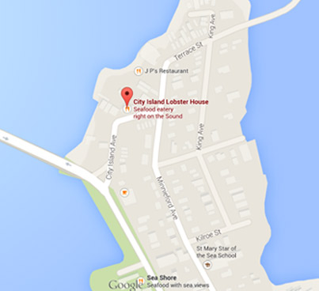

Contact
We’d love to hear from you. Let us know what you think of our food and service and we’d be happy to improve them for you.
-
City Island Lobster House 691 Bridge Street City Island, New York 10464
-
718-885-1459
-
718-885-1459

Directions
City Island, located just off the I-95 in the Bronx. Come join us!
- • From Manhattan: From the East side take FDR drive North to Tri-Borough Bridge, then take New England thruway North, (Bruckner Expressway I-95). Follow 95 North to exit 8B Orchard Beach City Island. Follow signs that say City Island.
- • From Manhattan’s West side: From the Wes Side Highway go to Cross Bronx Expressway North I-95. Follow I-95 to exit 8-B, Orchard Beach City Island. Follow signs that say City Island.
- • From New Jersey: George Washington Bridge to Cross Bronx Expressway (I-95). Follow I-95 to exit 8-B, Orchard Beach City Island. Follow signs that say City Island.
- • From Connecticut: I-95 South to exit 8-B, Orchard Beach City Island. Follow signs that say City Island.
- • From Westchester County: Take the Hutchinson River Parkway south and exit at Orchard Beach/City Island. Follow signs that say City Island.
- • From Brooklyn or Queens: Cross the Whitestone or Throggs Neck Bridge remain to your right and take the I-95 North (New England Thruway). Follow I-95 to exit 8-B, Orchard Beach City Island. Follow signs that say City Island.